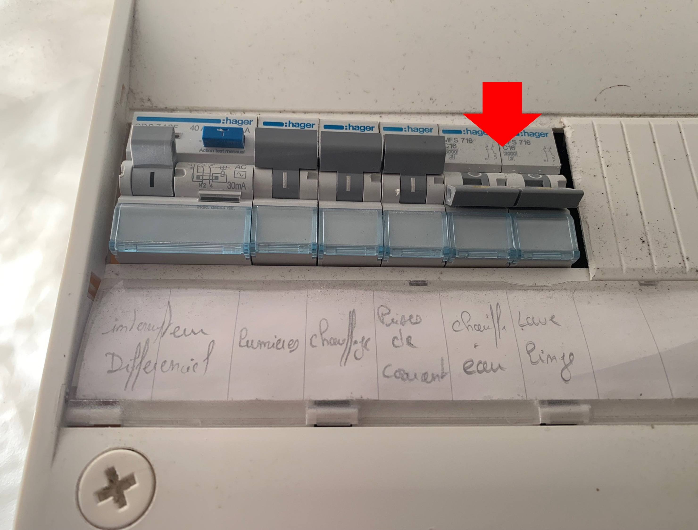
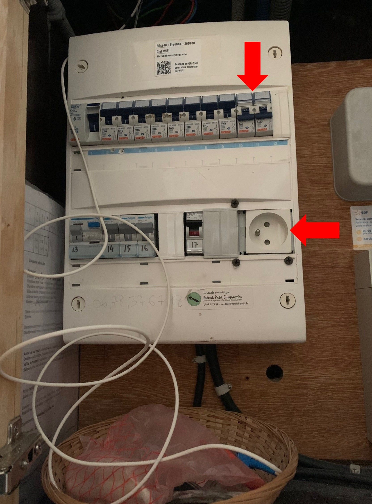
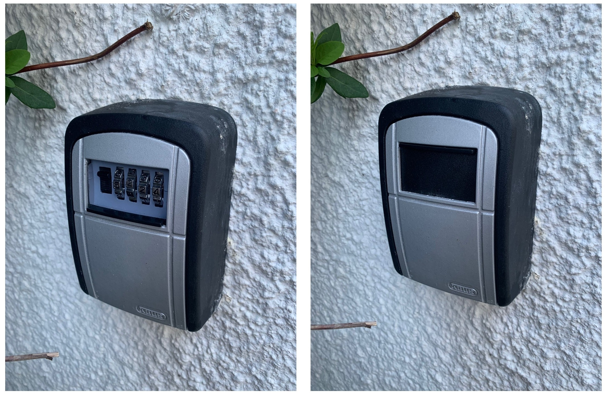
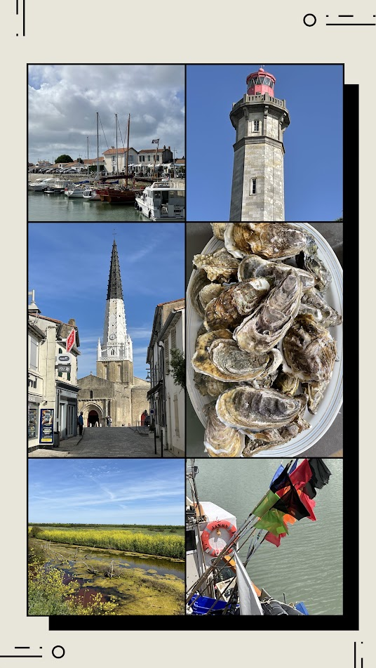

Ranger la maison
Avant de quitter la maison :
- Vider le réfrigérateur des produits périssables ;
- Sortir les poubelles ;
- Faire la vaisselle ;
- Couvrir la plancha et la table en hiver. Les housses sont dans le placard sous l’escalier.
- Replier les coussins du solarium et les ranger dans la chambre située au fond de la cour.
Ranger les vélos
Avant de quitter la maison :
- rendre les vélos de location ;
- rentrer les vélos de la maison dans la cour ;
- remettre les clés des antivols sur les consoles du salon.
Vérifier la fermeture des la maison
Avant de partir, faites un dernier tour de la maison et vérifiez :
- toutes les fenêtres ;
- les volets du rez-de-chaussée sur rue ;
- le Velux ;
- la porte de la cour et de la chambre du rez-de-chaussée, non fermées à clé.
Couper le chauffe-eau de la chambre de la cour
Dans les toilettes de la chambre située au fond de la cour :
- abaisser les deux interrupteurs du chauffe-eau.

Couper le chauffe-eau de la maison
Dans le sas d’entrée :
- ouvrir le tableau électrique ;
- abaisser les deux interrupteurs commandant le chauffe-eau de la maison.

Fermer l’arrivée d’eau
Toujours dans le sas d’entrée :
- ouvrir la trappe au sol ;
- fermer le robinet situé à gauche du compteur d’eau.

Remettre les clés
Une fois la maison fermée :
- déposer les clés dans le boîtier ;
- brouiller le code et refermer le clapet.

Merci de votre séjour !
Nous espérons que vous avez passé un agréable séjour au Clos de Léon et serons heureux de vous accueillir de nouveau à Ars-en-Ré.
